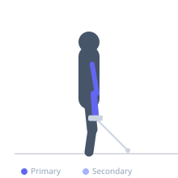
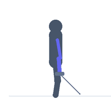

Exercise guide / Cable Hammer Curl
Cable Hammer Curl
The cable hammer curl is a biceps and brachialis exercise using a cable machine with a rope attachment, performed with a neutral (palms-facing) grip. The neutral grip activates the brachioradialis to a greater degree than a supinated grip and maintains constant cable tension throughout the arc, unlike dumbbells. This variation effectively builds the outer arm thickness and brachialis definition.
Primary muscles
brachioradialis
brachialis
Secondary muscles
biceps brachii long head
biceps brachii short head
Equipment
Cable Machine (Low Pulley)
Optional
Cable Machine (Dual Pulley / Functional Trainer)


Starting position
- Attach a rope to the low pulley of a cable machine. Stand facing the machine, holding each end of the rope with a neutral grip (palms facing each other). Arms extended toward the cable.
Setup
- Attach a rope to the low pulley. Stand close enough to the machine that the rope is taut at full arm extension with the hands near the thighs.
Steps
- Step 1: Hold the rope ends with a neutral grip, arms fully extended toward the low pulley.
- Step 2: Brace the core and keep the upper arms stationary at the sides.
- Step 3: Exhale and curl the rope upward by bending the elbows, keeping the neutral grip throughout.
- Step 4: Curl to full contraction, then inhale and lower back to full extension.
Coaching cues
- Keep the pinkies up and grip the ends of the rope firmly
- Elbows stay at your sides — they are the pivot point
Breathing
- Exhale on the curl; inhale on the return.
Range of motion
- Full extension at the bottom; full curl at the top.
Tempo
- 2-1-2-0
Common mistakes
- Letting the elbows drift forward — keep the upper arms pinned at the sides
- Supinating the wrists at the top — maintain neutral grip
Safety
- Keep the wrists neutral and in line with the forearm — avoid wrist flexion or extension
Training
- hypertrophy: 10–15 reps
- endurance: 15–20 reps
- hypertrophy: 3–4 sets
- endurance: 2–3 sets
- Rest: {'hypertrophy': 60, 'endurance': 45}